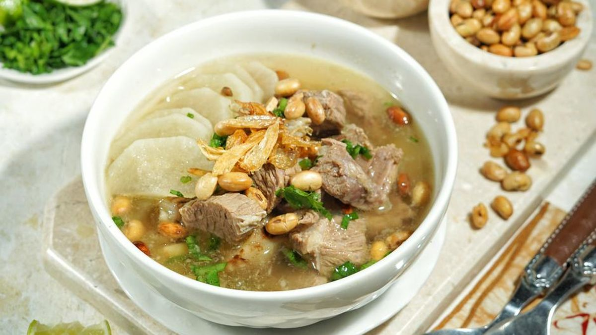

Jawa Barat
Soto Bandung 
Soto Bandung adalah soto khas Bandung, Jawa Barat. Sepintas, soto yang berbahan dasar daging sapi (biasanya bagian tetelan atau has dalam) ini hampir sama dengan jenis soto yang lain, tetapi yang membuatnya berbeda adalah adanya tambahan lobak, tomat, dan kedelai goreng di dalamnya.
Kue Balok

Kue balok merupakan salah satu makanan khas Bandung yang masih digemari. Kue yang serupa kue pukis ini digemari lantaran tekstur kuenya yang begitu lembut. Varian rasa yang dimilikinya pun beragam, mulai dari cokelat hingga keju.